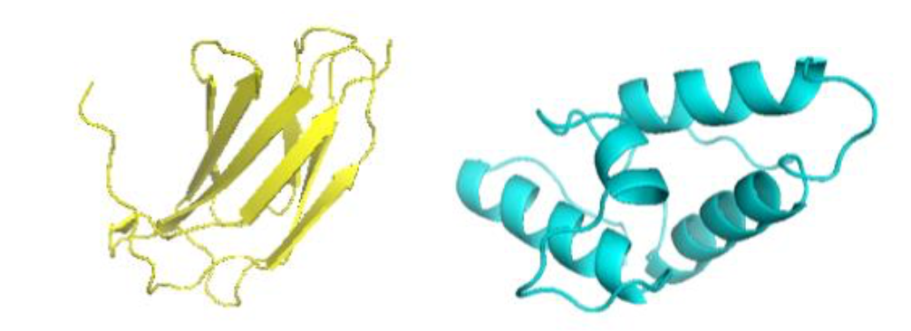

The use of neutron techniques in structural protein chemistry has increased in the last years. A major advantage of neutrons is the possibility of contrast variation, which enables one to match- out different parts of the system under investigation. This is performed by varying the D2O/H2O ratio in the buffer, and the deuteration levels of the constituents of the system. These experiments are then conducted under the assumption that proteins behave similar in H2O and D2O, although this is unlikely to be the case. The aim of this project is to investigate the effects of D2O (in comparison to H2O) on protein stability, solubility, conformational changes and interactions. This will be performed on proteins with different secondary structure and properties.
 Two proteins currently under investigation. Left: FN3 – primarily beta sheets. Right: IM7 – primarily alpha helices.
Our lab is very well equipped with biophysical instruments, and we have easy access to specialised equipment at collaborators at the HCØ institute. You will be working in a multidisciplinary environment among PhD students and post docs with backgrounds in physics, nanoscience and biochemistry. The project is meant to be a master’s thesis, and previous work (from BA project e.g.) with protein expression and purification is a requirement.